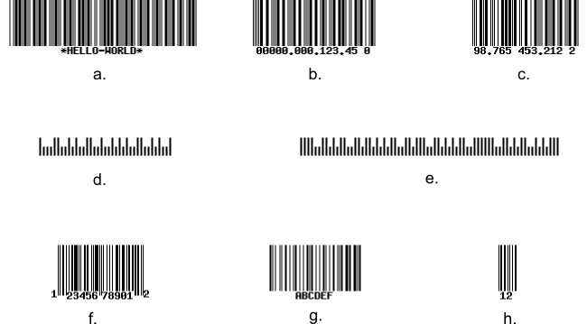

5.6. Segment Route Type
The Segment route type allows for matching the route string against one or several URL path segments.
If you look at the module.config.php file, you can see the Segment route type is used inside of the "application" route to make actions of your
IndexControllerautomatically mapped to site URLs. You just add an action method to yourIndexControllerclass, and it becomes available by a URL like "http://localhost/application/<action>". For example, you can see the About page of your site with the following URL: "http://localhost/application/about".
To demonstrate the creation of the Segment route type, let's implement a controller action which will generate a simple barcode image. Barcodes are widely used in supermarkets for optically recognizing goods in your shopping cart. The barcodes may be of different types and have different labels. We will use the Segment route type to map the action to a URL like "http://localhost/barcode/<type>/<label>".
To be able to use barcodes, you need to install the
Zend\Barcodecomponent with Composer, by typing the following command:
php composer.phar require zendframework/zend-barcode
Please note that for barcode images to work, you need to have the GD5 extension of the PHP engine installed and enabled. In Linux Ubuntu, you can install this extension with the following command:
sudo apt-get install php-gdAfter installing the extension, restart Apache to apply your changes.
5) PHP GD extension allows to create image files in different formats (like JPEG, PNG, GIF, etc.)
First, we define the "barcode" route in the module.config.php file:
'barcode' => [
'type' => Segment::class,
'options' => [
'route' => '/barcode[/:type/:label]',
'constraints' => [
'type' => '[a-zA-Z][a-zA-Z0-9_-]*',
'label' => '[a-zA-Z0-9_-]*'
],
'defaults' => [
'controller' => Controller\IndexController::class,
'action' => 'barcode',
],
],
],
Segments of the route string (line 4) may be constant or variable. You can define the variable
segments by using "wildcards". We have three segments: barcode, :type and :label.
The barcode segment is constant, while the latter two are wildcards (wildcard's name
should start with a colon).
You specify how a wildcard should look like inside of the constraints subkey (lines 5-8).
We define the regular expression [a-zA-Z][a-zA-Z0-9_-]* which constraints our :type
wildcard to begin with a letter and (optionally) contain several letters, digits,
underscores or minus characters. The constraint for the :label wildcard is almost the same,
but this segment can start with any allowed character (either letter, digit, underscore or minus sign character).
Optional segments can be enclosed in square brackets. In our example, we
have both the :type and :label segments as optional.
In lines 9-12, we define the defaults, the parameters that will be returned by the router.
The controller and action defaults specify which controller and action method to
execute on route match.
Next, we add the barcodeAction() method into the IndexController class:
// Add name alias in the beginning of the file
use Zend\Barcode\Barcode;
// ...
// The "barcode" action
public function barcodeAction()
{
// Get parameters from route.
$type = $this->params()->fromRoute('type', 'code39');
$label = $this->params()->fromRoute('label', 'HELLO-WORLD');
// Set barcode options.
$barcodeOptions = ['text' => $label];
$rendererOptions = [];
// Create barcode object
$barcode = Barcode::factory($type, 'image',
$barcodeOptions, $rendererOptions);
// The line below will output barcode image to standard
// output stream.
$barcode->render();
// Return Response object to disable default view rendering.
return $this->getResponse();
}
In lines 10-11 we get the values of the type and label wildcards
from route. We do that with the help of Params controller plugin's
fromRoute() method. Analogous to fromQuery() method, it takes
two arguments: the variable name and its default value.
For generating the barcode image, we use the Zend\Barcode component.
In line 14 we define the label text for the barcode. In lines 18-19 we
create the Barcode object with the factory method. Finally, in line 23 we
render the image file by dumping it to PHP output stream.
Zend\Barcodeis an auxiliary component used for generation of various barcode images. For additional information about this component, please refer to the corresponding section of Zend Framework reference manual.
In line 26 we return the Response object to suppress the default view rendering.
Now, enter the "http://localhost/barcode" URL into your browser to see the barcode image (shown in figure 5.6):
 Figure 5.6. An example barcode image
Figure 5.6. An example barcode image
Because we have the wildcards in the route, you can pass the type and label parameters of the barcode image in the URL. Below, several URL examples are provided (corresponding barcodes are presented in figure 5.7):
a. http://localhost/barcode/code39/HELLO-WORLD
b. http://localhost/barcode/leitcode/12345
c. http://localhost/barcode/identcode/98765453212
d. http://localhost/barcode/postnet/123456
e. http://localhost/barcode/planet/1234567890123
f. http://localhost/barcode/upca/12345678901
g. http://localhost/barcode/code128/ABCDEF
h. http://localhost/barcode/ean2/12
 Figure 5.7. Barcode types